7.1-7.3: Equipment and Design Considerations
7장은 증류탑 설계에 관한 내용이다. 증류탑 설계란 원하는 top/bottom 조성 맞추려고, reflux ratio R, 단수, feed 단, condenser&reboiler 조건, 압력·온도·duty를 정하는 문제라고 보면 된다.
증류는 휘발도를 이용해서 잘 날아가는 성분을 위로 분리하는 기법이다.
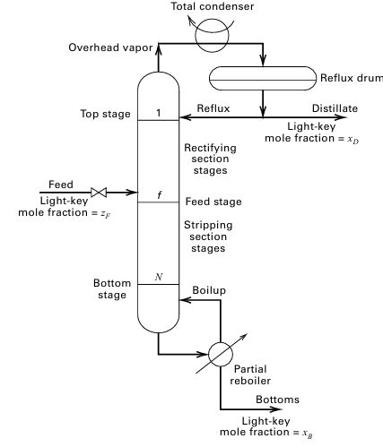
이런 증류탑을 그릴 수 있다. 탑은 상부 하부로 나뉘며 아래쪽에는 리보일러가 있다. 여기서 액체를 끓여 다시 위로 올리며 이를 boilup이라고 한다. 위에서는 vapor를 다시 콘덴서에서 응축시켜 일부를 탑 안으로 넣는 reflux가 일어난다.

| F | feed flow rate |
| D | distillate, 상부 제품 |
| B | bottoms, 하부 제품 |
| zF | feed 안의 light key 몰분율 |
| xD | distillate 안의 light key 몰분율 |
| xB | bottoms 안의 light key 몰분율 |
| L | reflux liquid flow rate |
| V | rectifying section vapor flow rate |
| Lˉ | stripping section liquid flow rate |
| Vˉ | stripping section vapor flow rate |
위쪽 구간을 rectifying section, 아래쪽 구간은 stripping section이라고 정의한다.
이제부터는 증류탑 하나를 설계하기 위해 어떤 결정을 어떤 순서로 해야 하는가를 설명한다.
먼저 두 가지 물질수지가 중요하다.
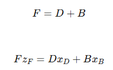
이를 정리하면 다음과 같은 식을 얻게된다.
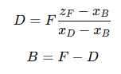
즉 top/bottom 유량은 감으로 정하는 게 아니라 제품 조성 스펙에서 물질수지로 먼저 결정된다.
다음으로 상대 휘발도와 평형선을 정의한다.
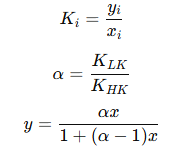
이제 McCabe–Thiele Method의 기본 가정인 CMO를 도입한다.
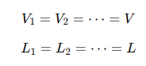
상부와 하부 조작선을 유도한다.
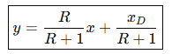 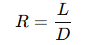 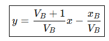 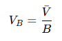
q-line을 정의한다.
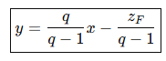
이를 통해 최종적으로 다음 선들이 얻어진다.
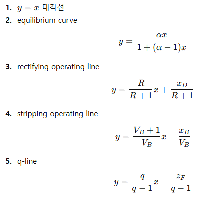
이제 TOP(xD,xD) 에서 시작하여
- 수평으로 equilibrium curve까지 이동
- 수직으로 operating line까지 이동
- 다시 수평으로 equilibrium curve까지 이동
- 다시 수직으로 operating line까지 이동
- xB에 도달할 때까지 반복
한 뒤 계단의 수를 센다. feed stage는 rectifying operating line에서 stripping operating line으로 갈아타는 위치이며 내 마음대로 정할 수 있긴 하지만.. q-line과 두 조작선이 만나는 지점 근처를 지나고 나서, 처음으로 조작선을 갈아탈 수 있는 순간에 갈아타는 것이 최적 feed stage이다.
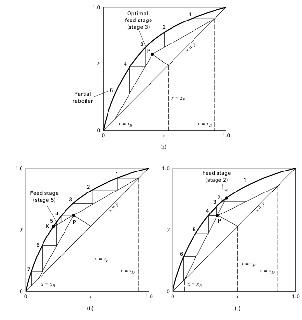
이때, 단수 셀 때 콘덴서와 리보일러를 포함하냐마냐가 중요하다.
| total condenser | 보통 제외 | vapor product 없이 전부 액화 |
| partial condenser | 포함 | vapor-liquid equilibrium 존재 |
| partial reboiler | 포함 | vapor-liquid equilibrium 존재 |
즉 리보일러는 단수로 포함되는 경우가 많고 보통 파셜 콘덴서도 단수로 친다. 그래서 일반적으로 5단이 나오면 리보일러 콘덴서 빼고 3단으로 구성하면 된다.
Limiting conditions
이때, 설계를 함에 있어서 매우 중요한 한계조건 2가지가 있다. Total reflux와 Minimum reflux이다.
전환류->최소단수, 최소환류->최대단수이다.
이때 전환류 기준 최소단수를 구하는 식을 다음과 같이 사용할 수 있다.
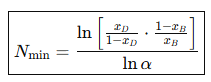
또는 어차피 전환류면 조작선은 Y=X이므로 조작선과 평형선 사이 단수로 구해버리기도 한다.
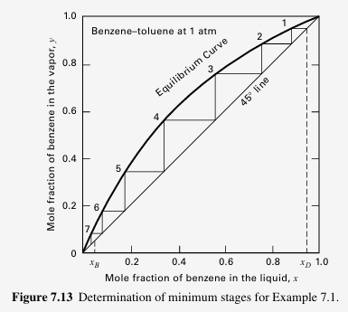
다음으로 최대 단수는 의미가 없는게, 어차피 무한대이다.. 따라서 중요한 거는 최소환류 구하기이고, 최소환류 값을 구해서 그거보다 환류를 크게하는 것이다.
이때, 최소환류 값을 구해보자. 이는 q-line과 equilibrium curve가 만나는 점과 (xD,xD)를 이은 직선에서 구할 수 있다. 이 직선의 기울기는 다음과 같다.
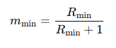
여기서 최소환류 값을 구할 수 있다.
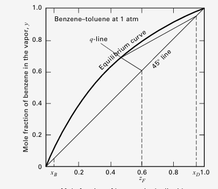
설계 파트: 이렇게 최소 단수를 Fenske 식이든 그래프에서 y=x랑 평형선 사이 단수 그려서 구하든 하고, 최소 환류비도 q-line과 평형선의 교점과 xd,xd를 이은 선의 기울기에서 구했다면 실제 조건을 정한다. 먼저 환류비는 Rmin에 1.5 정도 값을 곱해서 쓴다.
이후에 압력도 구할라고 하는데, 먼저 콘덴서 압력과 리보일러 압력이 필요하다. 콘덴서 압력의 경우는 냉각수 온도가 지정되니 그 온도에서 액화 가능한 압력으로 잡는다. = column top pressure .
이후 탑 바텀으로 갈 수록 압력은 증가하게 되는데, 보통 트레이당 압력강하를 주는 경우가 있다.
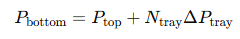
이렇게 바텀의 압력을 정하고, 바텀 조성도 목표 값 xB를 정하게 되면 이제 버블점 온도를 계산한다.
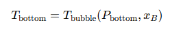
이때 온도가 너무 높으면 감압증류를 고려한다.
다음으로 피드인데, 피드 압력이 높으면 밸브를 통해 낮춰준다. 왜냐면 FEED STAGE 압력이랑 피드 압력이 같아야되기 때문이다.
다음으로 McCabe–Thiele로 단수와 조작선을 잡은 뒤, condenser duty와 reboiler duty를 따로 energy balance로 잡아서 필요한 duty를 구해준다. 만약 열손실이 없으면
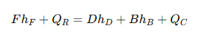
이렇게 되는데, 여기서 QR과 QC를 어떻게 구하냐가 관건이다,.
만약 토탈콘덴서면
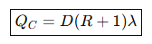
파셜콘덴서면
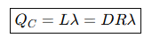
파셜리보일러는
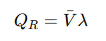 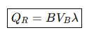
이걸좀 외우도록 하자. 이때 VB=V-/B이다.
이때 매우 중요한 게 feed preheating의 효과이다. feed를 preheat해서 일부 vapor로 만들면 feed vapor가 column 안으로 들어간다. 그러면 reboiler가 만들어야 할 vapor 양이 줄어든다.
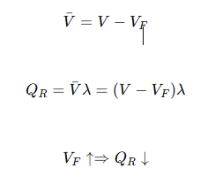
일단 이렇게 된다.
Murphree vapor efficiency
실제 tray는 완전한 평형에 도달하지 못한다.
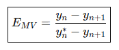
Murphree vapor efficiency는 실제 변화량을 평형까지 갔을 때 가능한 변화량으로 나눈 값이다. 효율이 60%라면 평형선까지 못 가고 중간까지만 간다
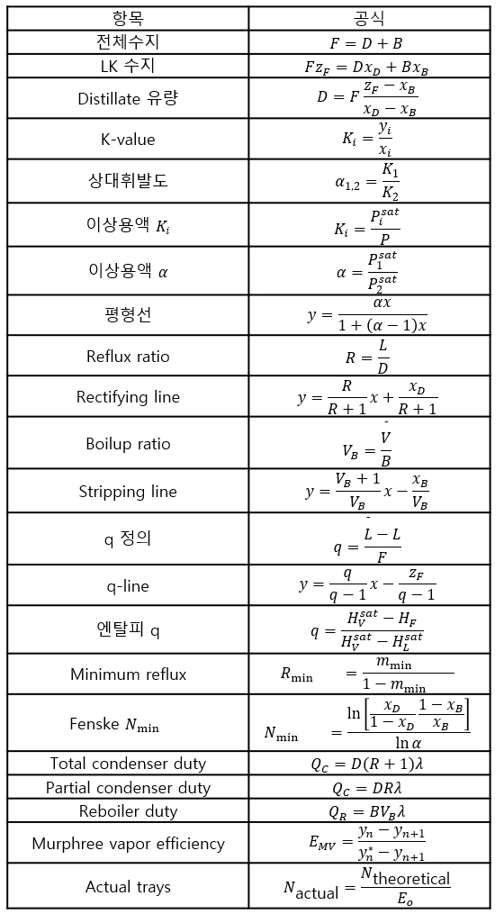